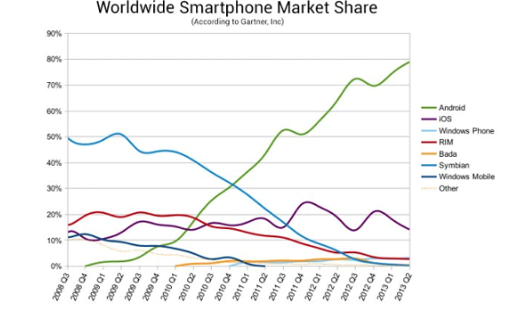

En 2015, Android est le système d'exploitation mobile le plus utilisé dans le monde. Il est devant le géant Apple avec plus de 80 % des parts du marché dans les appareils mobiles. Android est réputé pour être un des OS le plus libre et le plus ouvert au monde. C’est sa plus grande qualité qui fait son plus grand défaut. En effet, Android étant très ouvert, a connu de nombreuses crises de sécurité. En envoyant un simple MMS, des pirates pouvaient avoir accès à quasiment toutes les données sur le téléphone. En 2019, une faille de sécurité nommée Strandhogg a été découverte, permettant aux pirates de vider le comptes bancaires de leurs victimes. Malgré ces faits, Android reste, l’OS le plus utilisé au monde.
|  |
Cliquer ici pour accéder aux graphiques d'Android: |
Created by Hugo